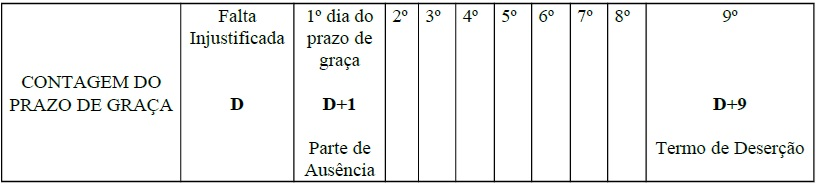

CAPÍTULO 9
DESERÇÃO
9.1 - OCORRÊNCIA
O crime de deserção ocorre quando o militar da ativa ou da reserva designado para o serviço ativo, sem estar devidamente autorizado, incidir em uma das hipóteses abaixo, de conformidade com os art. 187 a 194 do Código Penal Militar (CPM):
a) ausentar-se da unidade em que serve, ou do lugar em que deve permanecer, por mais de oito dias;
b) não se apresentar no lugar designado, dentro de oito dias, findo o prazo de trânsito ou férias;
c) deixar de se apresentar à autoridade competente, dentro do prazo de oito dias, contados daquele em que termina ou é cassada a licença ou agregação ou em que é declarado o estado de sítio ou de guerra;
d) tendo cumprido pena, deixar de se apresentar, dentro do prazo de oito dias;
e) conseguir exclusão do serviço ativo ou situação de inatividade, criando ou simulando incapacidade;
f) deixar de apresentar-se no momento da partida do navio ou de aeronave, de que é tripulante, ou do deslocamento da unidade ou força em que serve (deserção especial);
e
g) evadir-se do poder de escolta ou de recinto de prisão ou detenção, ou fugir em seguida à prática de crime para evitar a prisão, permanecendo ausente por mais de 8 dias (deserção por evasão ou fuga).
9.2 - CONTAGEM DA AUSÊNCIA
A contagem dos dias de ausência, para que se consume o crime de deserção, é feita a partir do dia seguinte ao da constatação da falta injustificada. Assim, a consumação ocorrerá a partir do término do oitavo dia de ausência. Por exemplo, a situação de um militar que compareceu normalmente no dia 1º de junho e deixou de comparecer a partir do dia 2 de junho. Seria assim realizado o cálculo para a consumação da deserção:
9.3 - CONSUMAÇÃO DA DESERÇÃO ESPECIAL
a) o militar foi licenciado às 17:00 horas do dia 1 e deveria regressar às 08:00 horas do dia 2 (D), tendo deixado de fazê-lo. O dia 2, portanto, é o dia da falta injustificada;
b) a Parte de Ausência será lavrada no dia 3 (D+1), primeiro dia de ausência, dia imediatamente posterior ao da falta injustificada;
c) a deserção será consumada após oito dias de ausência e, assim, ocorrerá a partir da zero hora do dia 11 (D+9), quando serão lavrados a Parte de Deserção e o Termo de Deserção;
- no caso da não apresentação do militar por término de férias, licenças, trânsito, prisão, agregação, declaração de estado de sítio ou guerra; ou ainda, de fuga ou de evasão, a falta injustificada ocorrerá caso o militar não se apresente no primeiro dia após término dos períodos de afastamento acima mencionados (que será o dia determinado como limite para a apresentação), ou no dia da fuga ou da evasão (este será o dia D). E a Parte de Ausência será lavrada no dia seguinte ao da falta injustificada (no dia D+1);
- desligado o militar de sua OM, deixando de ocorrer sua apresentação, os procedimentos descritos nestas Normas serão cumpridos pela OM de destino, cabendo à OM de origem cooperar com a investigação da ausência, particularmente quanto ao contido no art. 8.6, que trata das providências para localização e retorno do ausente à OM.
9.3 - CONSUMAÇÃO DA DESERÇÃO ESPECIAL
O crime de deserção especial (art. 190 do CPM) será consumado, imediatamente, no caso deDeploy to Netlify o militar não se apresentar no momento da partida do navio ou da aeronave onde serve ou se encontra destacado, uma vez não recebidas informações sobre seu paradeiro que justifiquem a ausência, devendo ser consignado em “Parte de Ausência” própria (modelo do Anexo C), que, de imediato, dará ensejo às lavraturas da “Parte de Deserção” e do “Termo de Deserção”.
9.4 - PARTE DE AUSÊNCIA
A partir da zero hora do dia seguinte àquele em que for verificada a falta injustificada (no dia D+1, primeiro dia de ausência), sem que se tenha qualquer informação a respeito (ou sem que as informações obtidas sejam suficientes para justificá-la, deverá o Imediato ou Vice-Diretor, no caso de ausência de Oficial, e o Encarregado do Pessoal ou da Divisão,
9.5 - PROVIDÊNCIAS DECORRENTES
no caso de ausência de Praça, fazer ao Comandante, ou à autoridade equivalente, a competente comunicação, por meio de uma “Parte de Ausência” (modelo do Anexo B).
Ao receber a “Parte de Ausência”, o Comandante, ou a autoridade equivalente, deverá despachar (modelo do Anexo D), em sua continuação, as seguintes providências:
a) designar um oficial, mais antigo que o ausente, como Encarregado da “Investigação da Ausência” e um oficial intermediário ou subalterno como Escrivão, no caso de oficial; ou, suboficial ou sargento, no caso de praça, a fim de serem lavrados os documentos pertinentes;
b) mandar proceder, ou solicitar que sejam procedidos pedidos de informações aos hospitais da Marinha na área, quanto à possível baixa do ausente;
c) mandar proceder ao inventário do material deixado na OM pelo militar ausente (modelo do Anexo F) e determinar que sejam inventariados os bens da Fazenda Nacional que se encontravam sob a responsabilidade do ausente (modelo do Anexo G), destacando as faltas e indicando os valores parciais e o valor total.
9.6 - PROVIDÊNCIAS PARA LOCALIZAÇÃO E RETORNO DO AUSENTE À OM
O Comandante, ou autoridade equivalente, com o propósito de tentar evitar a consumação do crime de deserção, providenciará a entrega, ao militar ausente, em sua residência, de uma “intimação” (modelo do Anexo L). No caso de não encontrá-lo, deverá ser solicitada à pessoa maior de 18 anos, e residente no local, a aposição de recibo na cópia da mesma. No recibo deverá constar o nome, o número da cédula de identidade ou de outro documento de identificação, o órgão expedidor e a assinatura do recebedor, além da data e da hora do recebimento.
9.7 - PARTE DE DESERÇÃO - PRAZO PARA A CONSUMAÇÃO DA DESERÇÃO
Após oito dias de ausência, no dia D+9, quando da consumação da deserção, será encaminhada ao Comandante, ou autoridade equivalente, a “Parte de Deserção” (modelo do Anexo H), sendo, logo a seguir, lavrado o “Termo de Deserção” (modelo do Anexo I) pelo Oficial Encarregado da “Investigação da Ausência”.
9.8 - ENCAMINHAMENTO DA PARTE DE DESERÇÃO
A “Parte de Deserção” será encaminhada ao Comandante, ou à autoridade equivalente, pelo Imediato ou Vice-Diretor, quando se tratar, o ausente, de oficial, e pelo Encarregado do Pessoal ou da Divisão, no caso de praça ou praça especial.
9.9 - LAVRATURA DO TERMO DE DESERÇÃO
O RAIADO oficial designado para proceder à lavratura do “Termo de Deserção” (Encarregado da Investigação da Ausência) deverá providenciar para que este seja lavrado logo após receber a “Parte de Deserção”, sendo, a este Termo, juntados todos os documentos relativos à deserção.
a) o “Termo de Deserção” será assinado pelo Comandante, ou autoridade equivalente, e por duas testemunhas idôneas, de preferência oficiais, além do Oficial Encarregado, conforme os art. 454 caput e 456 § 3° do CPPM;
b) o “Termo de Deserção”, após lavrado, será transcrito em Ordem de Serviço (OS), de acordo com o disposto no art. 454 caput e art. 456 § 4º do CPPM. Cópia dessa OS, assim como o original do Termo de Deserção, deverão ser anexados aos autos.
Os Comandantes de OM que sejam Oficiais-Generais poderão delegar competência, no todo ou em parte, para assinar os documentos relativos a processos de deserção de praças, a oficiais subordinados, com fundamento no art 7º, § 1º do CPPM, por analogia, devendo a portaria de delegação fazer menção expressa aos dispositivos que tratam dos assuntos delegados (art. 451, art. 454 e art. 456, todos do CPPM).
9.10 - DESERÇÃO ESPECIAL
No caso de deserção por perda de navio ou de aeronave, o Comandante (ou a autoridade superior) deverá, ao receber a “Parte de Ausência” (modelo do Anexo C), despachar em sua continuação (modelo do Anexo D), determinando as ações descritas nas alíneas a e c do art. 9.5. A “Parte de Deserção” (modelo do Anexo I) e o “Termo de Deserção” (modelo do Anexo J) serão lavrados de imediato, caso não sejam recebidas informações sobre o paradeiro do desertor que justifiquem a ausência.
9.11 - COMUNICAÇÃO DA DESERÇÃO
Lavrado o “Termo de Deserção”, será comunicada a deserção por meio de mensagem ao Comandante do Distrito Naval em cuja jurisdição ocorreu o crime, aos demais Comandantes de Distrito Naval e ao Diretor do Pessoal Militar da Marinha ou Comandante do Pessoal de Fuzileiros Navais, quando se tratar de militar do CFN, com informação ao Diretor do Centro de Inteligência da Marinha. Essa mensagem deverá conter: posto ou graduação, quadro ou especialidade, NIP e nome do desertor, local e data-hora da consumação do crime de Deserção, e o dispositivo correspondente do CPM (art. 187, art. 188 ou art. 190 do CPM).
9.12 - EXCLUSÃO DO SERVIÇO ATIVO E AGREGAÇÃO
Consumada a deserção de praça especial ou da praça sem estabilidade, ela será imediatamente excluída do serviço ativo; se praça estável, será agregada (art. 456 § 4º CPPM).
O oficial desertor será agregado, permanecendo nessa situação ao se apresentar ou ser capturado, até decisão transitada em julgado (art. 454 § 1º CPPM).
9.13 - DESLIGAMENTO DO MILITAR SEM ESTABILIDADE
Tratando-se de militar sem estabilidade, ao ser excluído do Serviço Ativo por Deserção, por Portaria da DPMM, CPesFN ou Comando de Distritos Navais, conforme o caso, deverá ser desligado de sua OM, na mesma data, ou seja, na data da consumação do crime de deserção, conforme previsto na DGPM-301 (Normas sobre Ingresso, Compromisso de Tempo, Permanência e Exclusão do SAM).
9.14 - ESPÓLIO
O espólio do militar desertor, depois de inventariado, será remetido à OM onde ele permanecerá preso, aguardando julgamento. Não havendo captura ou apresentação voluntária do desertor dentro dos 90 dias imediatamente posteriores à remessa da “Instrução Provisória de Deserção – IPD” à Auditoria, o espólio será entregue, mediante recibo, à família do militar ou ao seu representante legal.
O Encarregado não poderá, em hipótese alguma, alienar bens do espólio do desertor ou deles de samba do militar ou ao seu representante legal.
A IPD, assim como o Inquérito Policial Militar (IPM) e a Instrução Provisória de Insubmissão (IPI), é peça informativa, que se destina a apurar a prática do crime de deserção, e de sua autoria, a fim de fornecer os elementos necessários à propositura da ação penal.
9.15 - SOLICITAÇÃO DE CAPTURA
Ao ser solicitada ao Comando de Distrito Naval a captura de militar desertor, deverá ser incluída uma cópia do Termo de Deserção, bem como informados seus aspectos fisionômicos, inclusive com fotografias, a fim de facilitar o seu reconhecimento. Nessa ocasião, o Encarregado da IPD deverá expedir ofício à Superintendência Regional da Polícia Federal de seu Estado, com cópia para o Distrito da área, participando que o militar é desertor e encontra-se foragido. O ofício deverá conter o seu nome completo, filiação, data de nascimento e a cópia do Termo de Deserção, além da solicitação da inclusão do nome do desertor no Sistema STI-MAR (Medidas de Alertas e Restrições Ativas) conforme modelo do Anexo O. O endereço e demais informações poderão ser obtidas na página da Polícia Federal na internet.
9.16 - TRANSFERÊNCIA PARA PRISÃO MILITAR
O desertor, ao ser capturado ou apresentar-se voluntariamente, será transferido imediatamente para prisão militar da MB localizada na área da Circunscrição Judiciária Militar onde tramitará o processo penal, uma vez que o “Termo de Deserção” tem o caráter de instrução provisória, sujeitando, desde logo, o desertor à prisão (art. 452 do CPPM). O desertor que não for julgado dentro de sessenta dias, a contar do dia de sua apresentação voluntária ou captura, será posto em liberdade, por Alvará de Soltura expedido pela autoridade judicial, salvo se tiver dado causa ao retardamento do processo (art. 453 CPPM) ou lhe seja decretada a prisão preventiva.
9.16.1 - A prisão do desertor precisa ser imediatamente comunicada ao Juiz-Auditor com jurisdição sobre o local do crime e à família do preso ou à pessoa por ele indicada (art. 5º, LXII da CF/88), bem como ao Ministério Público, conforme o disposto no art. 10 da Lei Complementar 75/1993 e à Defensoria Pública da União, caso não informe o nome do seu advogado, conforme disposto no art. 306, § 1° do CPP.
9.16.2 - Por ocasião da prisão, o preso será informado de seus direitos constitucionais, entre os quais o direito à sua integridade física e moral, o de permanecer calado, o de comunicar-se com pessoa de sua família ou outra que queira indicar, com seu advogado, e à identificação dos responsáveis por sua prisão e pelo seu interrogatório, de acordo com o previsto no art. 5º, inciso XLIX, LXII, LXIII e LXIV da Constituição Federal (modelo Anexo N).
9.16.3 - Com o objetivo de dar cumprimento à Resolução nº 228 de 26 de outubro de 2016, que instituiu a audiência de custódia no âmbito da Justiça Militar da União (JMU), visando assegurar a apresentação, sem demora, da pessoa presa a um Juiz, nos casos de prisão decorrente de apresentação voluntária ou captura relativas aos delitos de deserção, orienta-se às Organizações onde ocorrerem tal prisão, que entrem em contato com a Auditoria onde tramita o Processo ou Auditoria de Distribuição (onde houver) da Circunscrição Judiciária da área, a fim de se informar dos procedimentos a serem adotados em cada caso, objetivando cumprir a resolução, observadas as peculiaridades de cada Circunscrição Judiciária Militar (CJM). Para o contato com a Auditoria, deverão ser observados os seguintes aspectos principais da norma em tela: local, data, horário e prazo para apresentação do preso; endereço eletrônico e/ou físico para envio da documentação atinente à prisão e verificação do juiz competente para análise da prisão. A citada resolução poderá ser consultada na página do Superior Tribunal Militar (STM) na internet.
9.16.4 - Deverá ser permitido ao preso informar os motivos pelos quais desertou, tomando a termo suas declarações (modelo dos Anexos R e S).
9.16.5 - Ao advogado do desertor, será permitido tomar conhecimento dos autos, copiar peças e fazer apontamentos, em meio físico ou digital, e apresentar razões e quesitos.
9.17 - INSPEÇÃO DE SAÚDE
O desertor, imediatamente após a captura ou apresentação voluntária, será submetido à inspeção de saúde, conforme previsto no art. 457 § 1° do CPPM, em OM do Sistema de Saúde da Marinha onde houver ocorrido tal fato. Caso não haja OM de Saúde na área, deverá ser realizado na OM da área de Saúde mais próxima. O original do “Termo de Inspeção de Saúde” ou cópia autenticada pelo Secretário da Junta de Saúde será remetido, com urgência, à Circunscrição Judiciária Militar para onde for encaminhada a IPD e à DPMM ou ao CPesFN, quando se tratar de militar do CFN.
9.18 - REINCLUSÃO/REVERSÃO
A praça desertora sem estabilidade que se apresentar ou for capturada deverá ser submetida à inspeção de saúde e, quando julgada apta para o serviço militar, será reincluída; já a praça estável será imediatamente revertida, independente da inspeção de saúde (art. 457 §§1º e 3º do CPPM).
A Ata da Inspeção de Saúde será remetida, com urgência, à Auditoria a que tiver sido distribuída a IPD para que, em caso de incapacidade definitiva, seja o desertor sem estabilidade isento da reinclusão e do processo, sendo os autos arquivados após o pronunciamento do Ministério Público Militar (art. 457 § 2º).
9.18.1 - A reinclusão da praça sem estabilidade será retroativa à data em que for julgada apta em Inspeção de Saúde. Enquanto o ato de reinclusão não for formalizado, o desertor deve ser tratado como civil, não devendo cumprir o expediente (caso tenha sido solto por Alvará de Soltura da Justiça Militar), tampouco concorrer às escalas de serviço, até que seja confeccionada a Portaria de reinclusão da DPMM, CPesFN ou Comando de Distritos Navais, conforme o caso. Isso porque o desertor encontra-se na condição de excluído e não é possível antever o resultado da Inspeção de Saúde. Nestes casos, o desertor continua sendo controlado por sua OM de origem para os fins das comunicações judiciais e dos desdobramentos administrativos.
9.18.2 - O pagamento da praça sem estabilidade deverá ser reativado após a formalização da Portaria de reinclusão, com data retroativa ao apto em Inspeção de Saúde. Não deve ser retroativo à data da captura/apresentação voluntária, a fim de que seja evitado o pagamento de benefícios sem prestação de serviços, e não deve ser considerado apenas a partir da data da Portaria, a fim de evitar prejuízo ao militar decorrente da demora na confecção do ato de reinclusão.
9.18.3 - A reversão da praça estável independe do resultado da Inspeção de Saúde e será retroativa à data da apresentação voluntária/captura. Caso seja julgado incapaz para o serviço ativo em Inspeção de Saúde, o militar poderá vir a ser reformado ou ficar isento do processo. Durante o período em que permanecer como desertor, o militar estará agregado, não perdendo o vínculo com a MB. Desse modo, uma vez capturado ou tendo se apresentado voluntariamente, deve ser tratado como militar, até que seja formalizado o ato de reversão.
9.18.4 - O pagamento da praça estável deverá ser reativado após a formalização do ato de reversão, com data retroativa à data da sua captura ou apresentação voluntária.
9.19 - COMUNICAÇÃO
9.19.1 - Quando ocorrer a captura ou apresentação voluntária, o fato deverá ser, de imediato, comunicado por mensagem à DPMM, ou ao CPesFN, no caso de militar do CFN, e ao CIM, pela OM que realizou a captura ou onde o militar houver se apresentado voluntariamente. Caso essa OM não seja o Distrito Naval da área, a mensagem deveráunlike ser endereçada também a estas OM. Essa mensagem conterá: posto ou graduação, quadro ou especialidade, NIP e nome do militar, local e data da captura ou apresentação voluntária, e local onde se encontra o detido. Caso a captura ou a apresentação voluntária ocorra em área de jurisdição de Distrito Naval que não seja aquela onde tramitará o processo penal, este deverá receber a presente comunicação.
Deverá ser observado o disposto no art. 9.16 desta Norma, no que tange à comunicação da prisão ao Juiz-Auditor e ao MPM (de acordo com o art. 10 da Lei Complementar nº 75/1993) e a notificação dos direitos constitucionais do preso.
9.19.2 - O Distrito Naval em cuja jurisdição se verificar a captura ou a apresentação voluntária do desertor comunicará o fato, por mensagem, aos demais Distrito Navais e OM de origem, participando também, por ofício, à mesma autoridade a que foi solicitada a inserção no STI-MAR. O ofício será dirigido ao Superintendente Regional, participando que o militar foi capturado ou se apresentou voluntariamente, deixando de estar na condição de desertor, e deverá conter o seu nome completo, filiação, data de nascimento, além de solicitar a atualização do seu registro no referido Sistema (modelo do Anexo P).
9.19.3 - A mensagem mencionada no inciso anterior terá obrigatoriamente, como endereçados de informação, a DPMM ou CPesFN, quando se tratar de militar do CFN.
9.20 - OFÍCIO DE APRESENTAÇÃO
O Comandante do Distrito Naval, em cuja jurisdição correrá o processo penal, quando da remessa do ofício de apresentação do militar ao Presídio da Marinha, ou outra OM responsável pela sua guarda, deverá, além de observar o prescrito nos incisos 9.16.1 e 9.16.2, (caso ainda não tenha sido cumprido), comunicar:
a) à Circunscrição Judiciária Militar a captura ou a apresentação voluntária do desertor, indicando a data em que tal situação ocorreu e o local onde se acha recolhido o preso;
b) à OM onde permanecerá preso, se o militar foi capturado ou se a apresentação foi voluntária, como também, a data em que tal situação ocorreu.
9.21 - REMESSA DA IPD E OUTROS DOCUMENTOS
9.21.1 - A IPD será remetida, por meio de ofício URGENTE, ao Juiz-Auditor da Circunscrição Judiciária Militar da área onde ocorreu a deserção, até cinco dias após lavrado o “Termo de Deserção”. Cópia da IPD deverá ser enviada à DPMM ou ao CPesFN, quando se tratar de militar do CFN, juntamente com a cópia do ofício de remessa à Circunscrição Judiciária Militar competente.
9.21.2 - Na IPD e no ofício de remessa deverão constar o nome completo do desertor, a data de nascimento, filiação, CPF, sexo, estado civil, naturalidade, nacionalidade, endereço residencial e da OM, bem como endereço eletrônico e telefones para contato, profissão, grau de instrução, identidade civil e militar constando órgão expedidor, título de eleitor, posto ou graduação e local de trabalho, nome do Encarregado (modelo do Anexo Q), bem como a data do término do tempo de engajamento ou compromisso do desertor, se for o caso, como também, se o Comandante, ou autoridade equivalente, determinou ou solicitou que fossem feitas as necessárias diligências para a localização e o retorno à OM do militar desertor, de acordo com os documentos juntados à IPD.
9.21.3 - Na área do 1° Distrito Naval, a IPD será remetida ao Juiz-Auditor Distribuidor das Auditorias da 1ª Circunscrição Judiciária Militar, exceto para as OM situadas no Estado de Minas Gerais, que encaminharão diretamente à Auditoria da 4ª Circunscrição Judiciária Militar.
Na área do 8º Distrito Naval a IPD será remetida ao Juiz-Distribuidor da 2ª Circunscrição Judiciária Militar.
9.21.4 - Após a remessa da IPD à Circunscrição Judiciária Militar, os documentos do militar desertor serão encerrados, devendo constar: na Caderneta-Registro ou Guia-Histórico (no caso de MN-RC), os artigos relativos à Ausência, à Deserção e ao Espólio e, no Sistema de Pagamento, as diferenças relativas aos pagamentos já efetuados, antecipadamente, ou devidos ao desertor na data da deserção.
9.21.5 - Os documentos do militar desertor serão encerrados e encaminhados, numa primeira fase, ao Comando do Distrito Naval em cuja jurisdição correrá o processo penal. Serão nessas OM arquivados, até a captura ou a apresentação voluntária do desertor ou pelo prazo de dois anos após a data da deserção, quando então, numa segunda fase, serão encaminhados e mantidos na DPHDM.
Em se tratando de militar do CFN, servindo na área do Com1°DN, os documentos, em sua primeira fase, serão encaminhados ao CPesFN e, na segunda fase, à DPHDM.
9.21.6 - Ocorrendo a captura ou apresentação voluntária, o Comando do Distrito Naval ou CPesFN remeterá os documentos do militar desertor à sua OM de origem, e esta, caso não esteja com a custódia do militar, ao recebê-la, deverá encaminhá-la para a OM onde este permanecerá preso, aguardando decisão da justiça competente.
9.21.7 - Quando ocorrer a emissão de Alvará de Soltura, expedido pelo Juiz-Auditor da respectiva Circunscrição Judiciária Militar, o militar desertor deverá ser desligado da OM onde permaneceu preso, para a OM de origem, a fim de aguardar o julgamento.
9.22 - COMPOSIÇÃO DA IPD
Farão parte da IPD os seguintes documentos, que serão reunidos e enfeixados numa “Capa” (modelo do Anexo A):
a) Folha de Qualificação do Desertor (modelo do Anexo Q);
b) “Parte de Ausência” (modelos dos Anexos B ou C);
c) despacho do Comandante, ou autoridade equivalente, em seguida à “Parte de Ausência” (modelo do Anexo D);
d) “Termo de Compromisso do Escrivão” (modelo do Anexo E);
e) cópia da “Intimação” (modelo do Anexo L), devidamente firmada pelo recebedor, se for o caso;
f) “Termo de Inventário de Bens da Fazenda Nacional” (modelo do Anexo G);
g) “Parte de Deserção” (modelos dos Anexos H ou I);
h) “Termo de Deserção” (modelo do Anexo J);
i) cópia da Ordem de Serviço onde esteja transcrito o “Termo de Deserção”;
j) cópia da Caderneta-Registro ou Guia-Histórico, no caso de praças MN-RC, com anotações de todas as fases pertinentes à deserção;
k) ficha dactiloscópica do desertor, se recebida.
9.23 - ASSENTAMENTOS DO MILITAR
Cópia autêntica dos assentamentos do militar desertor deverá ser anexada à IPD, podendo ser utilizadas fotocópias, desde que autenticadas pelo Encarregado do Pessoal da OM, conforme as Normas sobre Documentação Administrativa e Arquivamento na Marinha (NODAM).
9.24 - IMPRESSÃO DACTILOSCÓPICA
À IPD deverá ser anexada a ficha que contenha as impressões dactiloscópicas do desertor. Essa ficha será solicitada ao SIM e, caso seja recebida após a remessa dos autos, deverá ser encaminhada à Circunscrição Judiciária Militar para onde os mesmos foram encaminhados.
9.25 - BENS DA FAZENDA NACIONAL
Quando for constatada falta em bens da Fazenda Nacional, sob a responsabilidade do militar desertor, estes serão relacionados conforme o modelo do Anexo G, devendo o original da relação ser anexado à IPD e remetidas cópias ao CCIMAR e ao Órgão responsável pelo controle do material.
9.26 - CONCLUSÃO DA IPD
Após a conclusão da IPD, os documentos anexados serão relacionados, constituindo esta relação à última folha.
9.27 - RESTAURAÇÃO DO TERMO DE DESERÇÃO
9.27.1 - Quando o Superior Tribunal Militar (STM) ou Conselho de Justiça mandar restaurar um Termo de Deserção por ter havido qualquer irregularidade, a autoridade competente mandará lavrar um “Termo de Deserção Restaurado” (modelo do Anexo M).
O “Termo de Deserção Restaurado” é realizado pela autoridade competente pela lavratura do Termo de Deserção original, por determinação do STM, do Juiz-Auditor ou do Conselho de Justiça, a fim de sanar qualquer irregularidade por ventura existente no anteriormente encaminhado à Auditoria, uma vez que tal documento constitui condição para o prosseguimento da ação penal nos crimes de Deserção.
9.27.2 - Ocorrendo o previsto na alínea anterior, as testemunhas poderão ser quaisquer pessoas designadas pela autoridade para o ato de restauração, mesmo que sejam diferentes das que assinaram o primeiro termo.